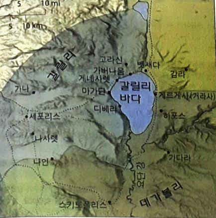

1그 때에 예수께서 성령에게 이끌리어 마귀에게 시험을 받으러 광야로 가사
2사십 일을 밤낮으로 금식하신 후에 주리신지라
3시험하는 자가 예수께 나아와서 이르되 네가 만일 하나님의 아들이어든 명하여 이 돌들로 떡덩이가 되게 하라
4예수께서 대답하여 이르시되 기록되었으되 사람이 떡으로만 살 것이 아니요 하나님의 입으로부터 나오는 모든 말씀으로 살 것이라 하였느니라 하시니
5이에 마귀가 예수를 거룩한 성으로 데려다가 성전 꼭대기에 세우고
6이르되 네가 만일 하나님의 아들이어든 뛰어내리라 기록되었으되 그가 너를 위하여 그의 사자들을 명하시리니 그들이 손으로 너를 받들어 발이 돌에 부딪치지 않게 하리로다 하였느니라
7예수께서 이르시되 또 기록되었으되 주 너의 하나님을 시험하지 말라 하였느니라 하시니
8마귀가 또 그를 데리고 지극히 높은 산으로 가서 천하 만국과 그 영광을 보여
9이르되 만일 내게 엎드려 경배하면 이 모든 것을 네게 주리라
10이에 예수께서 말씀하시되 사탄아 물러가라 기록되었으되 주 너의 하나님께 경배하고 다만 그를 섬기라 하였느니라
11이에 마귀는 예수를 떠나고 천사들이 나아와서 수종드니라
12예수께서 요한이 잡혔음을 들으시고 갈릴리로 물러가셨다가
13나사렛을 떠나 스불론과 납달리 지경 해변에 있는 가버나움에 가서 사시니
14이는 선지자 이사야를 통하여 하신 말씀을 이루려 하심이라 일렀으되
15스불론 땅과 납달리 땅과 요단 강 저편 해변 길과 이방의 갈릴리여
16흑암에 앉은 백성이 큰 빛을 보았고 사망의 땅과 그늘에 앉은 자들에게 빛이 비치었도다 하였느니라
17이 때부터 예수께서 비로소 전파하여 이르시되 회개하라 천국이 가까이 왔느니라 하시더라
18갈릴리 해변에 다니시다가 두 형제 곧 베드로라 하는 시몬과 그의 형제 안드레가 바다에 그물 던지는 것을 보시니 그들은 어부라
19말씀하시되 나를 따라오라 내가 너희를 사람을 낚는 어부가 되게 하리라 하시니
20그들이 곧 그물을 버려 두고 예수를 따르니라
21거기서 더 가시다가 다른 두 형제 곧 세베대의 아들 야고보와 그의 형제 요한이 그의 아버지 세베대와 함께 배에서 그물 깁는 것을 보시고 부르시니
22그들이 곧 배와 아버지를 버려 두고 예수를 따르니라
23예수께서 온 갈릴리에 두루 다니사 그들의 회당에서 가르치시며 천국 복음을 전파하시며 백성 중의 모든 병과 모든 약한 것을 고치시니
24그의 소문이 온 수리아에 퍼진지라 사람들이 모든 앓는 자 곧 각종 병에 걸려서 고통 당하는 자, 귀신 들린 자, 간질하는 자, 중풍병자들을 데려오니 그들을 고치시더라
25갈릴리와 데가볼리와 예루살렘과 유대와 요단 강 건너편에서 수많은 무리가 따르니라